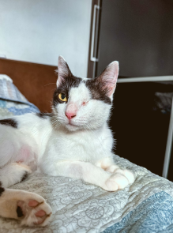
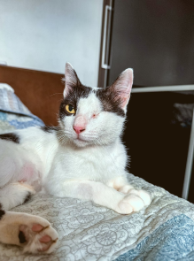

☰

A ACAPRA é uma ONG dedicada à proteção animal na região de Brusque. Com muito amor e esforço,
contamos com a ajuda de voluntários para realizar resgates, arrecadar recursos e oferecer lares temporários
aos animais que foram abandonados ou sofreram maus-tratos.
Nosso maior sonho é proporcionar a cada um deles uma segunda chance, um lar cheio de carinho e segurança.
Junte-se a nós nessa missão e ajude a transformar vidas! 🐾🖤
 
